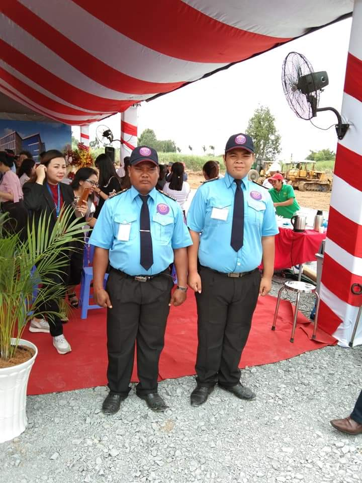
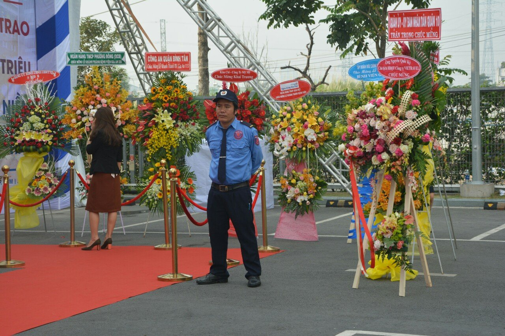

Những ngày cận lễ, hội và suốt quá trình diễn ra lễ, hội là cơ hội thuận lợi để các thành phần xấu hoạt động, gây tác động tiêu cực đến an ninh, an toàn tính mạng, tài sản của cá nhân, doanh nghiệp. Để duy trì tính trật tự tại đơn vị, việc sử dụng một lực lượng bảo vệ là cần thiết. Nhưng đâu mới là quyết định đúng đắn: BẢO VỆ NỘI BỘ/CÁ NHÂN BẢO VỆ hay DỊCH VỤ BẢO VỆ? Bài viết sau đâu sẽ thảo luận một số nội dung cơ bản về hai hình thức bảo vệ này. Trước hết cùng làm rõ một số nội dung bảo vệ sự kiện, lễ hội về mục đích, nhiệm vụ của nhân viên và các tiêu chuẩn công ty cung cấp dịch vụ bảo vệ phải đạt được.
1. Xác định rõ mục đích bảo vệ sự kiện, lễ hội
Sự kiện, lễ hội là mục tiêu phức tạp, vừa cố định vừa di động. Do đó, xác định các yếu tố, phân loại theo từng nhóm và xác định mục đích bảo vệ là cần thiết.
- Xác định được đối tượng cần bảo vệ trong sự kiện, lễ hội. An toàn tuyệt đối cho mọi người tại sự kiện là việc quan trọng nhất. Các đối tượng cụ thể như: ban tổ chức, khách mời, ca sĩ, khán giả,…
- Bảo vệ để không để xảy ra các hoạt động trộm cắp, cướp giật, tội phạm.
- Bảo vệ không để xảy ra các hiện tượng cháy nổ trong phạm vi sự kiện, lễ hội.
- Phát hiện và kịp thời phối hợp xử lý những hành vi nguy hại, có dấu hiệu phạm tội.
- Bảo toàn tài sản tại nơi tổ chức sự kiện, lễ hội.
2. Nhiệm vụ của chúng tôi khi thuê nhân viên bảo vệ sự kiên, giữ xe bao gồm:
- Kiểm soát lối ra vào
- Duy trì an ninh
- Hướng dẫn chỗ ngồi cho khách mời
- Phòng ngừa ý đồ xấu của kẻ gian
- Đảm bảo an toàn cho yếu nhân, các nhân vật quan trọng …
a) Mô tả công việc chung khi thuê bảo vệ sự kiện, giữ xe
- Từ khi chuẩn bị đến khi kết thúc không để xảy ra các hoạt động của tội phạm, cháy nổ. Công ty bảo vệ kiểm soát và điều phối từ xa những đám đông nghi ngờ có thể xuất phát các sự kiện lộn xộn.
- Ngăn chặn và phối hợp với lực lượng vũ trang bắt giữ những kẻ có hành vi côn đồ quá khích gây rối trật tự trị an.
- Kiểm soát người vào khu vực, vào cổng.
- Không cho bất cứ người lạ, người không có giấy tờ, không có vé, …vào khu vực cần bảo vệ.
- Bố trí lực lượng, phương tiện ở nhiều vị trí, nhiều lớp tạo thành thế liên hoàn khép kín.
- Giải quyết các vụ việc từ xa, không để cho tiến vào và làm phát sinh vụ việc từ bên trong.
- Thái độ mềm mỏng, hòa nhã nhưng phải kiên quyết giữ nghiêm túc đối với những người ra vào các khu vực theo quy định của ban tổ chức.
- Bố trí các phương tiện kĩ thuật nghiệp vụ ở những nơi và vị trí cần thiết, kiểm tra người phương tiện ra vào theo nhiệm vụ phân công.
- Kiểm soát hàng hóa, tài sản mang ra, mang vào mục tiêu tổ chức sự kiện.
b) Nhiệm vụ chính khi bắt đầu thuê bảo vệ sự kiện, giữ xe:
- Không để xảy ra các hoạt động của tội phạm như cháy nổ, bạo loạn, hơi cay, pháo sáng,… kể từ thời gian chuẩn bị. Kiểm soát và điều phối đám đông từ xa.
- Phối hợp và ngăn chặn với lực lượng vũ trang cùng bắt giữ những trường hợp có hành vi côn đồ, quá khích, gây rối trật tự công cộng.
- Kiểm soát người vào cổng, vào khu vực giới hạn để điều tra khi có sự cố xảy ra.
- Ngăn cản, không cho bất cứ người lạ, không có trách nhiệm, không có vé, hoặc người không có giấy tờ… vào khu vực cần bảo vệ.
- Bố trí tổng thể lực lượng, phương tiện ở nhiều lớp, nhiều vị trí tạo thành thế liên hoàn khép kín.
- Giải quyết các vấn đề từ xa, không làm phát sinh vụ việc từ bên trong.
- Thái độ cần hòa nhã, mềm mỏng nhưng phải kiên quyết, nghiêm túc đối với những người ra vào các khu vực theo quy định của ban tổ chức.
- Bố trí các phương tiện kĩ thuật nghiệp vụ ở những nơi và vị trí cần thiết, kiểm tra người phương tiện ra vào theo nhiệm vụ phân công.
- Kiểm soát tất cả hàng hóa, tài sản mang ra, mang vào mục tiêu tổ chức sự kiện.
- Toàn thể các nhân viên bảo vệ phải trang bị và sử dụng bộ đàm để thông báo tình hình và yêu cầu hỗ trợ khi cần thiết. Bộ phận chỉ huy đội bảo vệ trong sự kiện luôn theo dõi diễn biến của sự kiện, giám sát công việc của nhân viên để đưa ra bước làm việc kế tiếp cho phù hợp.
c) Một số yêu cầu khác khi thuê bảo vệ sự kiện, giữ xe:
- Chỉ huy đội bảo vệ phải thông báo những tình huống khẩn cấp cho đạo diễn chương trình sự kiện, ban tổ chức để xin ý kiến chỉ đạo.
- Thời gian làm việc của nhân viên tùy thuộc vào yêu cầu của khách hàng, yêu cầu của sự kiện.
- Luôn luôn khảo sát và xây dựng phương án bảo vệ riêng cho từng sự kiện.

3. Một số tiêu chuẩn yêu cầu đối với dịch vụ bảo vệ sự kiện như:
- Bảo vệ tuân thủ các yêu cầu khắt khe về nhân viên ngoại hình, khả năng xử lý tình huống, chịu được áp lực công việc…
- Kỹ năng nghiệp vụ chuyên nghiệp, đã từng trải qua lớp đào tạo võ thuật cơ bản.
- Đã được đào tạo qua lớp giải quyết và các sự cố tình huống.
- Sử dụng thuần thục các công cụ hỗ trợ chuyên dụng như: dùi cui, roi điện, gậy sắt, gậy sáng điều phối xe.
- Độ tuổi từ 25 - 40 tuổi, và đáp ứng được các tiêu chí riêng về ngoại hình
- Yêu cầu về trang phục: nhân viên được trang bị đầy đủ bộ đồng phục phù hợp với loại hình dịch vụ : sự kiện, event âm nhạc, hội chợ… Tùy vào từng sự kiện và tùy vào yêu cầu của khách hàng mà công ty bảo vệ trang bị trang phục và trang thiết bị cho nhân viên bảo vệ phù hợp.
a) Yêu cầu về nghiệp vụ:
Tất cả các nhân viên được tham gia vào đội bảo vệ sự kiện, lễ hội phải đáp ứng được các yêu cầu về nghiệp vụ như sau:
- Đã qua lớp đào tạo võ thuật cơ bản.
- Đã qua lớp đào tạo Nghiệp vụ bảo vệ
- Đã qua lớp đào tạo giải quyết các sự cố trong bảo vệ sự kiện.
- Biết sử dụng các công cụ hỗ trợ chuyên dụng như: gậy sắt, roi điện, gậy sáng điều phối xe.
- Độ tuổi từ 25 - 40 tuổi, và đáp ứng được các tiêu chí riêng về ngoại hình của Khách hàng.
b) Yêu cầu về trang phục:
Công ty Bảo Vệ HOÀNG LONG đã trang bị những bộ đồng phục phù hợp với loại hình dịch vụ bảo vệ sự kiện, tùy vào từng sự kiện và tùy vào yêu cầu của khách hàng mà Công ty Bảo Vệ HOÀNG LONG trang bị trang phục cho nhân viên bảo vệ phù hợp. Các trạng phục đang áp dụng như:
- Quần, áo bảo vệ thông thường. Phục vụ cho các sự kiện bình thường, ngoài trời, không mang tính chất phức tạp, …
- Quần đen, áo sơ mi trắng, đeo cà vạt, áo vest đen. Phục vụ cho các sự kiện sang trọng, trong hội trường, …
- Áo chống đâm, nón chống bạo động. Đối với các sự kiện có tính chất phức tạp cao, ngoài trời.
c) Yêu cầu về trang phục:
Trang bị các công cụ hỗ trợ chuyên dụng cho loại hình bảo vệ sự kiện như: Súng, Gậy sắt, roi điện, áo chống đâm, mũ chống bạo động, bộ đàm chuyên dụng, gậy sáng điều phối giao thông…

4. Nên sử dụng bảo vệ nội bộ hay thuê dịch vụ bảo vệ?
a) Bảo vệ nội bộ/cá nhân bảo vệ lễ, hội
Bảo vệ nội bộ/cá nhân bảo vệ là nhân viên bảo vệ chỉ làm việc dưới sự quản lý, điều động của đơn vị. Bảo vệ nội bộ thường chỉ được trang bị nghiệp vụ cơ bản, các hành động, xử lý thường dựa trên kinh nghiệm có được. Cá nhân bảo vệ do công ty tuyển dụng theo hợp đồng. Đơn vị tuyển dụng chịu trách nhiệm quản lý về hoạt động, nghiệp vụ, các hồ sơ pháp lý.
Sử dụng bảo vệ nội bộ/cá nhân bảo vệ lễ có một số ưu điểm như:
- Chi phí cho bảo vệ nội bộ có thể thấp hơn so với việc thuê công ty cung cấp bảo vệ chuyên nghiệp.
- Tận dụng nguồn nhân lực sẵn có.
- Khả năng phục tùng đắc lực hơn.
- Dễ “sai vặt” hơn.
- Thời gian làm việc nhiều hơn.
Bên cạnh đó cũng có một số khuyết điểm không thể tránh khỏi:
- Nhân viên thiếu nghiệp vụ, kỹ năng, không được đào tạo bài bản trong xử lý tình huống xấu bất ngờ xảy ra.
- Nhà tuyển dụng phải nắm rõ nhân thân của nhân sự.
- Mất nhiều thời gian để đào tạo nghiệp vụ.
- Đơn vị tự chịu trách nhiệm trước các sai phạm, các khoản phí do mất mát, rủi ro của nhân viên gây ra.
- Tuy nhiên, tình trạng “giặc ngoài dễ phòng, giặc nhà khó phòng ” đôi khi vẫn xảy ra. Nhân viên lợi dụng lòng tin của đơn vị mà thực hiện các hành vi bất chính, gây tổn thất về tài sản mà quan trọng hơn là thông tin doanh nghiệp.
b) Sử dụng dịch vụ bảo vệ sự kiện, lễ hội, giữ xe
Để tránh những điểm bất lợi nêu trên, công ty dịch vụ bảo vệ nói chung và Công ty Cổ phần Dịch vụ Bảo vệ Chuyên nghiệp Hoàng Long nói riêng có dịch vụ bảo vệ trực lễ cung cấp sự an tâm cho mọi cá nhân, doanh nghiệp.
Thông tin nhân viên rõ ràng và nghiệp vụ bài bản
- Nhân viên thực hiện dịch vụ bảo vệ trực lễ có hồ sơ lý lịch rõ ràng, hợp pháp. Đảm bảo đủ sức khỏe và trách nhiệm pháp lý thông qua các hợp đồng, văn bản.
- Được đào tạo (nếu chưa có chứng chỉ) và cấp chứng chỉ nghiệp vụ, chứng nhận PCCC.
- Lực lượng nhân viên bảo vệ trực lễ được bố trí, quản lý nhằm đảm bảo an ninh trực và tuần tra 24/24, phát hiện, ngăn chặn kịp thời, xử lý các hành vi, đối tượng có mục đích xấu tác động lên tính mạng và tài sản của cá nhân, đơn vị, doanh nghiệp, tổ chức.
- Nhân viên trực lễ bảo vệ có các kỹ năng, nghiệp vụ xử lý các tình huống. Phương pháp phù hợp mục tiêu bảo vệ với từng mục tiêu. Một số mục tiêu như: tòa nhà, chung cư, bệnh viện, trường học, cá nhân, sự kiện, kho, nhà máy…
Hiệu quả trong hoạt động - an toàn tuyệt đối cho tiêu đề
- Có văn bản, hợp đồng, đề mục thỏa thuận về việc xử lý các rủi ro trong quá trình thực hiện nhiệm vụ giữa công ty cung cấp dịch vụ với khách hàng.
- Có quyền thay đổi nhân viên bảo vệ không đạt yêu cầu.
- Đơn vị cung cấp (bảo vệ dịch vụ công ty) chịu trách nhiệm quản lý nhân lực.
- Nghiêm túc, túc trực cho các vấn đề liên quan đến công nghệ bảo mật, khách hàng thông tin bí mật.
- Bảo đảm an ninh và mạng toàn tính, tài sản cho các mục tiêu.
Tiết kiệm chi phí
- Đơn vị sử dụng bảo vệ dịch vụ (khách hàng) không phải lo lắng về các đồng lao động, lợi ích, bảo hiểm và các chi phí quản lý khác của nhân viên bảo vệ.
- Không tốn kém chi phí tuyển chọn, đào tạo, huấn luyện, quản lý, kiểm tra, giám sát nhân lực.
- Không tốn kém chi phí về trang phục, thiết bị an ninh, công cụ hỗ trợ, tư vấn và văn phòng chi phí.
- Đơn vị cung cấp dịch vụ chịu trách nhiệm với phần bồi thường do lỗi của nhân viên. Giải quyết các vấn đề liên quan đến tai nạn lao động trong quá trình làm việc.